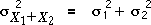
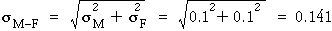

Verschiedene Standardabweichungen
Ähnliche Ergebnisse, wie die auf der vorherigen Seite stimmen auch, wenn X1 und X2 unterschiedliche Standardabweichungen haben. Die nachstehende Tabelle verallgemeinert die Formeln auf dieser Seite.
Beachte, dass nach wie vor der Unterschied zwischen den Variablen die gleiche Standardabweichung wie ihre Summe hat.
Im Hinblick auf die Varianzen
Man kann sich an die Formel für die Standardabweichung leichter erinnern, wenn diese in Bezug auf die Varianzen der drei Größen anstatt in Bezug auf deren Standardabweichungen ausgedrückt werden. (Denke daran, dass die Varianz einfach das Quadrat der Standardabweichung ist.)

Illustration
Die folgende Abbildung ist ähnlich der auf der vorherigen Seite, aber die Standardabweichungen von X1 und X2 können separat durch Ziehen der kurzen vertikalen Linien über ihren Normalverteilungen geändert werden. (Die Mittelwerte können auch durch Ziehen der längeren vertikalen Linien eingestellt werden.)
Untersuche erneut, wie die Verteilung der Summe und Differenz von X1 und X2 durch die beiden Mittelwerte und Standardabweichungen beeinflusst werden.
Beachte insbesondere, dass:
Die Standardabweichungen von X1 + X2 und X1 - X2 gleich sind und größer sind als beide σ1 und σ2.
Göße von Ehemann-und-Ehefrau-Paaren
Das Diagramm unten simuliert das Stichprobenzihen von eines Ehemanns und der dazugehörigen Ehefrau aus einer Population, in der die Größe des Ehemanns mit einem Mittelwret von 1,85 Meter normal ist und die die Göße der Ehefrau mit einem Mittelwert von 1,7 Meter ebenfalls normal ist. Es wird davon ausgegangen, dass es keine Tendenz der großen Frauen für große Männer gibt und umgekehrt- die männlichen und weiblichen Größen sind unabhängig- und dass die Verteilungen für beide Geschlechter Standardabweichung von 0,1 Meter haben.
Die Verteilungen oben rechts zeigen die Klarheit einer zufällig Auswahl von Männern und Frauen aus einem Türrahmen, der 2,1 Meter hoch ist. Diese Verteilungen haben auch Standardabweichung von 0,1 Meter.
Klicke Akkumulieren, dann klicke einige Male Stichprobe ziehen, um unterschiedliche Paare zu wählen.
(Klicke auf irgendein Kreuz in dem verwackelten Dotplot, um den Ehemann und die Ehefrau anzuzeigen, die es hervorgerufen haben.)
Die mittlere Höhe der Männer 0,15 Meter größer als die mittlere Höhe der Frauen, so dass die Verteilung der Unterschiede (männlich minus weiblich) auf 0,15 Meter zentriert ist. Beachte auch, dass der Unterschied eine größere Standardabweichung hat, als entweder die männlichen oder weiblichen Höhen selbst haben.

| Der Abstand zwischen der Spitze des Kopfes der Frau und einem festen Standort (der Boden oder der Türrahmen) hat eine geringere Streuung als der Abstand zu einem variablen Standort (die Spitze des Kopfes des Mannes). |
|---|